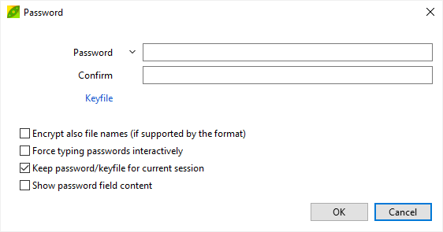

Hide name of files in
archives
Under some
circumstances, when protecting archive
files with encryption, it can be recommended to encrypt the list of
files
featured inside an archive to hide it from unauthorized users, in order
to disallow showing list of archive content before providing password,
otherwise, even if the file data itself is encrypted, readable
filenames can leak hints to attackers about the nature of the archive.

How to encrypt
filenames in archives with PeaZip
To prevent this
kind of information leak and make archive
table of content (TOC) unreadable without knowing the password,
disabling listing of the archive when the user will try to open the encrypted archive file,
it is possible to set a password for listing archive content.
Click
on the
padlock icon to
set a password (and
optionally
a keyfile) for the archive
and check "Encrypt also file names"
option in the password dialog.
Browse archives with
hidden file list
This will require the correct password to be provided opening the
archive, before being able to show name of files in archives.
The padlock icon to set password for archive / filenames in archive,
can be found in the status bar, in the file/archive
browser, or below the output field in the archive creation interface


|
Support for
encryption of archive's table of content depends on the archive format
design: this feature can't
be added to formats lacking it by design, as enforcing it on the
archive manager will enable the attacker to bypass this "protection"
simply using a
different software to list the archive's content. |

|
What formats support
hiding names of files in archive
Encryption in
standards employed by PeaZip supports in different ways the encryption
of
file content:
- ZIP and ZIPX formats
lack this feature, meaning this setting will have no effect, and
archive
TOC will always be readable before providing the correct password even
if the data is encrypted
- 7Z, ARC, and RAR formats support encryption of
filenames in archive, so if this option is in use the archive content
will be
hidden unless correct password is provided for browsing it
- in order to create encrypted RAR files with PeaZip
WinRar must be installed in the system, autonomous write-support for
rar format is not possible due to rar licensing limitations
PEA and ZPAQ format,
by design, will never display content of an encrypted archive until
correct password is provided, and no option is provided to otherwise
allow listing of password-protected files. Using those archive formats,
providing encryption is in applied, name of files in archive will
always stay hidden until password is verified.
Learn more about working with archive formats supporting filename
encryption: manage encrypted 7Z files
(optionally with filename encryption), manage
encrypted ARC files, manage encrypted PEA files, create and modify encrypted RAR files
from PeaZip GUI if WinRar is installed in the system, manage encrypted ZPAQ files.
Synopsis: How to
encrypt name of files inside archives, hide (make unreadable without
password) TOC list. Disallow listing archive content. Disable browsing
inside archives. How to set option to ask password for showing content
of 7Z PEA RAR files.
Topics: encrypt file
names, so opening the archive requires password for listing archive
content
PeaZip > FAQ
> Encrypt file names in archives, hide content
|